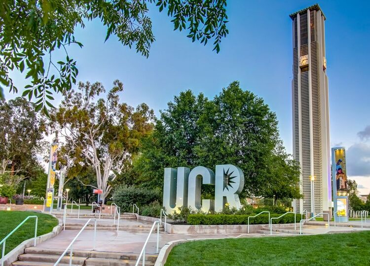
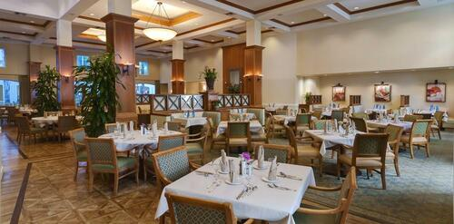
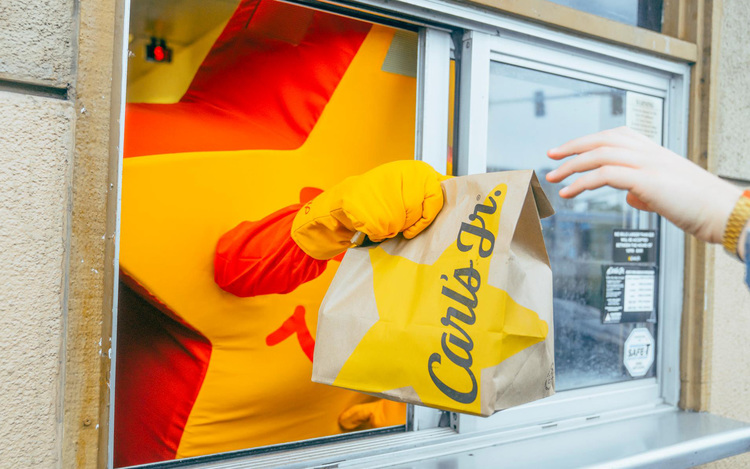
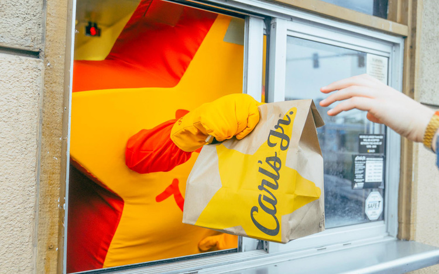

Justin Toledo
I am a student at the University of California Riverside, working to receive a bachelors of science in mathematics. My first job was as a server in the dining room of a retirement home. There I had responsibilities such as taking orders and bringing the guests their food, while maintaining great customer service. There I Picked up on a lot of skills such as working together as a team( having to work with the bussers and hosts) and to not let pressure affect my work. Being a server meant that I had to work in a fast paced environment that may pressure some people. I then took the skills I obtained there with me to my next job as a busboy/dishwasher. While this job seems basic enough, it was a change in that now, instead of interacting with guests, I was working in a more independent working environment. This helped show me that even if I have nothing to do, I can always find something to make use of my time. If the dishes were all clean then I would check if the tables are all bussed and clean and if they are all clean then I would continue to see if anything needed to be done. This helped me become a productive worker, than I had been prior. Due to schedule changes I had to quit to find something to fit my new schedule. That is where I am now, a cashier at Carl’s Jr.. Here I am back working with customers, taking orders and giving them their food. However as I continue this job or any other job I may soon have, I will continue to grow and obtain new skills that I can not only use in future jobs or careers but I can also use in my everyday life. However outside of my work experience I am not too far from your everyday student. I am a full time student so I use a lot of time towards my studies. However, in my free time I enjoy going out with friends or playing video games. I hope in the future to pursue a master’s degree in mathematics and become a math teacher or professor. I would like to be able to help others learn so these careers peaked my interest the most. However, I still have a long way to go and I hope to get to have many more experiences, where I can grow as a person.
Experience
Busboy/Dishwasher
• Wash dishes, glassware, flatware, pots, or pans, using dishwashers or by hand.
• Maintain kitchen work areas, equipment, or utensils in clean and orderly condition.
• Make sure tables are clean and set for the next guests
Server
• Check with customers to ensure that they are enjoying their meals and take action to correct any problems
• Write patrons' food orders on order slips, memorize orders, or enter orders into computers for transmittal to kitchen staff
• Serve food or beverages to patrons, and prepare or serve specialty dishes at tables as required.
Education
UC Riverside
Fulton College Prep
Portfolio



.jpg)
